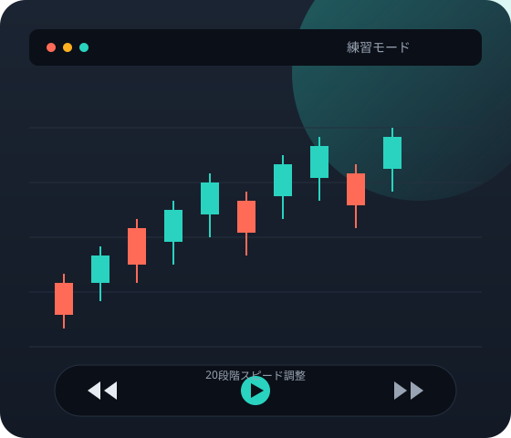
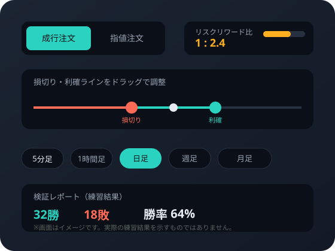

本番の前に、何度でも巻き戻して練習できるFXトレード
「MT4裁量トレード練習君プレミアム２」は、過去の相場データをMT4上で再生・巻き戻ししながら、市場が開いていない時間でもオフラインで裁量トレードを練習できるソフトです。
※本ページはアフィリエイト広告を含みます。価格・仕様は変更される場合があるため、最新情報は公式サイトでご確認ください。
- 29,800円（税込・買い切り）
- バージョンアップ無料
- お使いのMT4口座で利用可

裁量トレードの練習、こんな壁にぶつかっていませんか
相場が動く時間に練習できない
仕事や家事が終わる頃には値動きが一段落していて、リアルタイムでの練習機会を確保しづらい――という声は少なくありません。
いきなり実弾は怖い
裁量トレードの経験を積みたくても、実際にお金が動くと含み損が気になり、冷静にエントリー根拠を検証しづらくなりがちです。
デモ口座だと時間がかかる
デモ口座での練習はリアルタイム進行が前提のため、同じだけの経験を積むのに、そのまま同じ時間がかかってしまいます。
感覚だけでエントリーし、あとから振り返っても根拠を説明できない――そんな状態のまま実弾に進むのは避けたい、という裁量トレーダーは多いはずです（推定）。
MT4裁量トレード練習君プレミアム２とは
過去のヒストリカルデータを使い、MT4上で裁量トレードの練習ができるソフトです。チャートを好きな速度で再生・巻き戻ししながら、成行・指値注文や損切り／利確ラインの設定を、市場が開いていない時間でも試すことができます。
開発・販売元はAtoZ Global Management株式会社（千葉県柏市）。お使いのMT4対応ブローカーの口座であれば、そのまま組み合わせて利用できるとされています。

こんな方に向いています
日中は仕事や家事で忙しく、相場が動く時間帯にリアルタイムで練習しづらい方
裁量トレードの経験を積みたいが、いきなり実弾で試すのは避けたい方
すでにEA（自動売買プログラム）や手法を持っていて、過去データで検証したい方
MT4の操作に不慣れで、基本操作から練習を始めたい初心者の方
主な機能
公式サイトに記載されている機能の一部です。詳細は公式サイトでご確認ください。
成行・指値注文
固定ロット／リスクベースでの成行注文・指値注文に対応しています。
リスク管理機能
リスクリワード比を可視化し、損切り・利確ラインをドラッグ操作で調整できます。
20段階スピード調整
チャートの再生速度を20段階で調整でき、短い時間で多くの値動きを経験できます。
マルチタイムフレーム
5分足から月足まで切り替え可能。追加チャートも最大4枚まで表示できます。
チャート巻き戻し
チャートを巻き戻して同じ場面を繰り返し練習でき、検証レポートも連動して更新されます。
検証レポート・ランキング
トレードごとの成績をレポートで確認でき、他ユーザーと比較できるランキング機能もあります。
知っておきたい4つのポイント
買い切り・アップデート無料
一度購入すれば、追加費用なしでバージョンアップを受けられると公式サイトに記載されています。
無料メールサポート
導入や動作に関する質問はメールサポートで確認できます（MT4自体の使い方はサポート対象外です）。
お使いのMT4口座で利用可能
MT4に対応したブローカーの口座であれば、そのまま組み合わせて利用できるとされています。
既存のEAとの併用
保有しているEA（自動売買プログラム）と組み合わせて検証にも使えるとされています。
動作環境・注意事項
動作環境
- Windows 7以降での動作を想定（Windows 7では表示上の軽微な不具合が出る場合があるとされています）
- CPU：Pentium4 1.6GHz相当以上（Celeron可）
- Macで利用する場合、Parallels Desktopでの動作は非対応とされています
ご購入前の注意事項
- 本ソフトはお客様の収益を保証するものではありません。
- FXは元本および利益が保証された取引ではなく、損失が生じる場合があります。取引の最終判断はご自身の責任で行ってください。
- ライセンスは1名分です。第三者への譲渡・貸与・再販売、複数環境への同時インストールはできません。
価格・お支払い方法
買い切りプラン
29,800円（税込み）
購入後、Infotopのユーザーページから14日以内にダウンロードしてご利用いただけます。
- クレジットカード（VISA／Master／JCB）、銀行振込、郵便振替、コンビニ決済、ビットキャッシュに対応
- 追加費用なしで将来のバージョンアップに対応
- サポートを受けても動作しない場合、30日以内の返金保証あり（パソコンのスペック不足による場合は対象外）
※価格・お支払い方法は変更される場合があります。最新情報は公式サイトでご確認ください。
利用開始までの流れ
公式サイトで内容を確認し、購入手続きを行う
価格・仕様・お支払い方法を公式サイトで確認したうえで購入手続きに進みます。
Infotopのユーザーページからダウンロード
決済完了後14日以内に、Infotopのユーザーページからソフトをダウンロードします。
MT4環境にセットアップ
MT4がインストールされた環境にソフトを導入します。
通貨ペア・時間足を選んでデータを準備
練習したい通貨ペアと時間足を選択すると、過去のヒストリカルデータが自動でダウンロードされます。
再生・巻き戻ししながら練習し、レポートで振り返る
速度調整や巻き戻し機能を使いながら注文を出し、検証レポートでトレードを振り返ります。
よくある質問
MT4といっても特に難しく考える必要はないとされています。一般的なチャートソフトと操作感は大きく変わらないと公式サイトで案内されています。
必要な知識は簡単なパソコン操作程度とされています。裁量トレードの基礎を、実弾を使わずに練習したい方向けの練習ソフトです。
デモ口座はリアルタイムの値動きに合わせて練習する必要がありますが、本ソフトは過去の相場データをもとに、20段階の速度調整や巻き戻し機能を使って好きなタイミング・好きな速度で練習できます。
Windows 7以降、CPUはPentium4 1.6GHz相当以上（Celeron可）での動作を想定しています。Macの場合、Parallels Desktopでの動作は非対応とされています。
サポートを受けても動作しない場合に限り、30日以内の返金保証が用意されています（パソコンのスペック不足による場合は対象外です）。
公式サイトの情報時点ではMT5版は開発中とされており、将来的に無償提供される予定と案内されています。導入時期については公式サイトで最新情報をご確認ください。
本番の前に、練習で慣れておく
MT4裁量トレード練習君プレミアム２で、過去の値動きを使った練習から始めてみませんか。詳しい仕様・お支払い方法は公式サイトでご確認ください。
公式サイトで詳細を確認する※本ページはアフィリエイト広告を含みます。